📖 11/16 漫畫版「あげます・もらいます・くれます」
全 12 頁日漫複習（baoyu-comic --art manga --tone warm）。主角ハルト（約 37 歲、住神樂坂附近的語言學校新生，虛構）在東京的日常生活裡練習 あげます・もらいます・くれます、時々、もうすぐ，還有 11/20 結核檢診要穿 T 恤。氣泡文字可能糊掉或有錯字，請一律以圖下日語列為準（▶ 播放／⧉ 複製）。
角色設定（一致性）
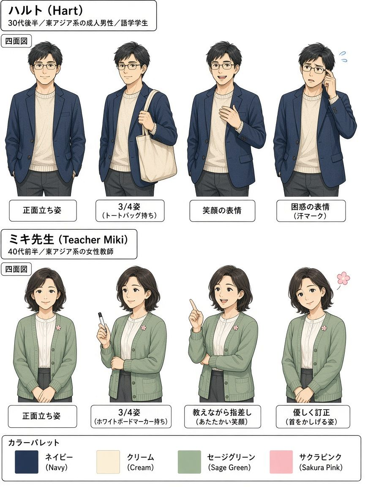
ハルト：東京・神樂坂附近的成人語言學校學生（晚 30 歲、眼鏡、海軍藍外套）。頁面上不使用任何真實姓名／肖像。
ミキ先生：溫柔的語言學校老師（鼠尾草綠開襟衫、櫻花徽章）。
友だち：通用朋友／同學／路人（沒有真實姓名）。
畫風：日漫 clean ink、screentone、速度線、表情符號、日語氣泡＋中文對照。
圖上小錯誤備註（請以圖下日語列為準）： P01 第 1 格中文寫成「學校 notifications」，應為「學校的通知」； P04 第 1 格氣泡是車站廣播「まもなく電車が来ます」，ハルト的「もうすぐ電車が来ます」請看圖下；中文「来」應為繁體「來」；電子看板小字亂碼請忽略； P05 第 2 格畫成老師在說話，句子是ハルト的； P06 第 3 格「音楽が好きですか、」應為「音楽が好きですから、」；牆上小字亂碼請忽略； P11 檢診車上的字是亂碼，請忽略； P12 最後一格「頑張ってください」應該是ミキ先生說的，圖上畫成第二個ハルト。
12 頁目錄
P01 学校からのお知らせ
学校からのお知らせ
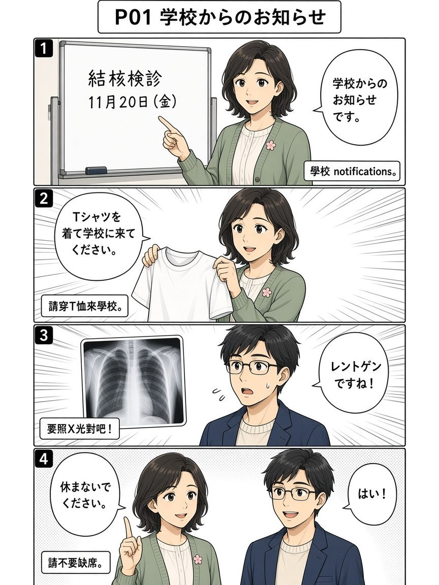
ミキ先生宣布：11 月 20 日（金）結核檢診，要穿 T 恤來學校，不要請假。
P02 漢字「時」
漢字「時」
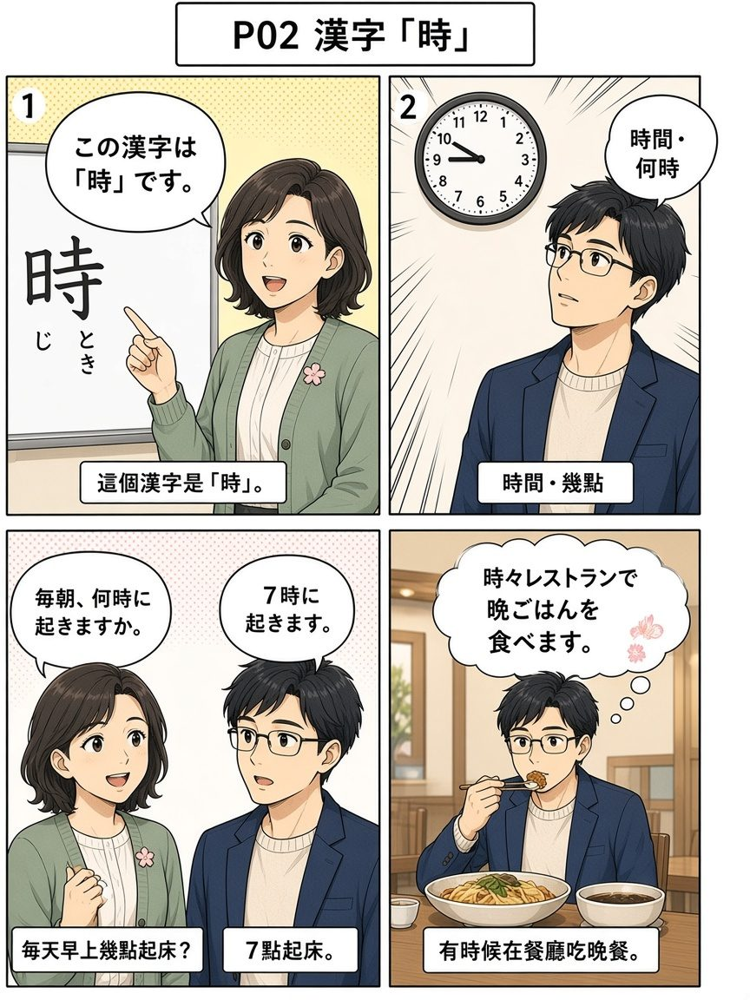
「時」有兩個讀音：音讀 じ（時間、何時、7時）和訓讀 とき（時々）。
P03 漢字「生」「先」「今」
漢字「生」「先」「今」
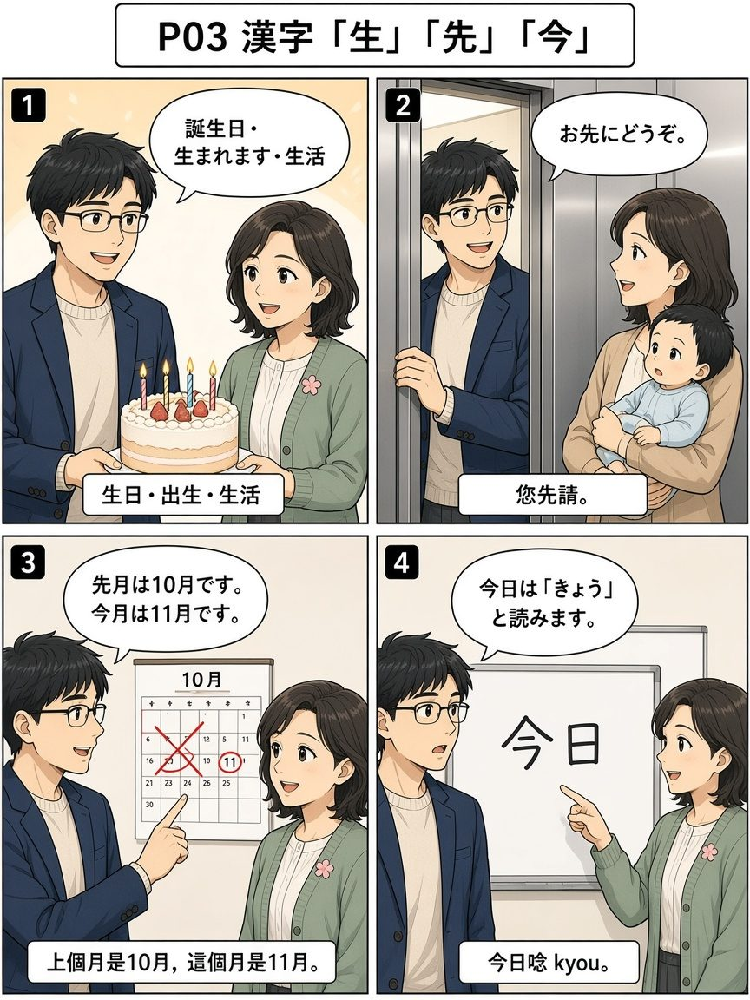
誕生日・生まれます・生活；お先にどうぞ；先月／今月；今日＝きょう（特別讀法）。
P04 もうすぐ
もうすぐ
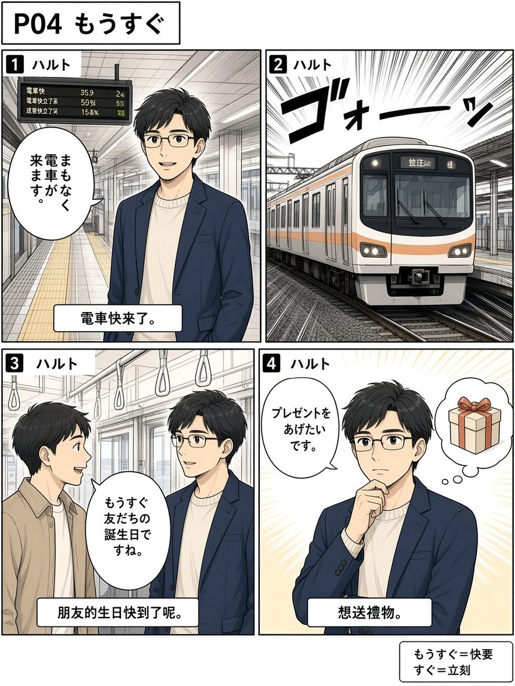
月台上電車快來了；朋友的生日也快到了。もうすぐ＝快要，すぐ＝立刻。
P05 あげます
あげます
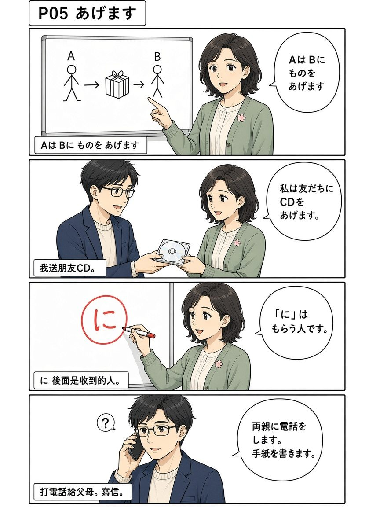
A は B に もの を あげます。に 後面是收到的人。電話します、手紙を書きます 也用「人に」。
P06 プレゼントの相談
プレゼントの相談
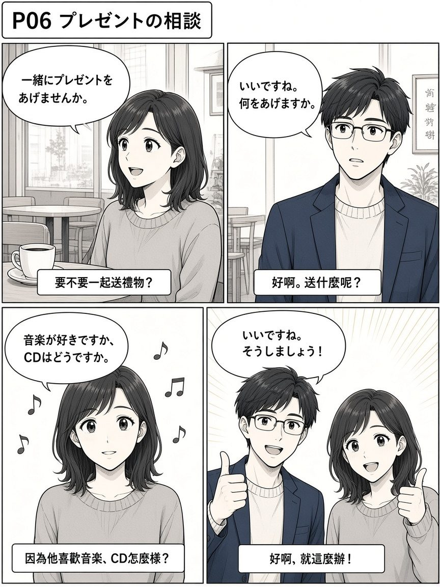
跟同學商量一起送禮：あげませんか → 何をあげますか → 〜から、〜はどうですか → そうしましょう。
P07 もらいます
もらいます
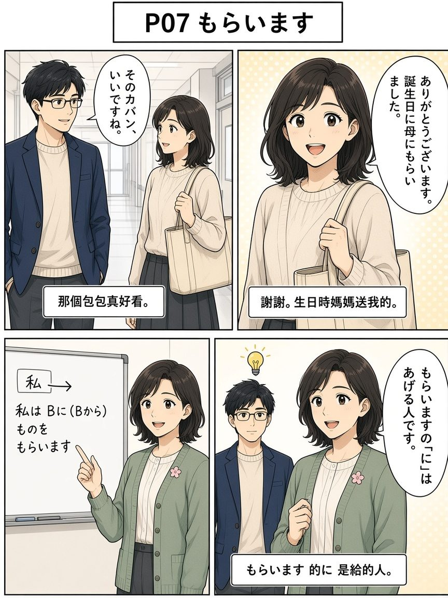
稱讚同學的包包，對方說是生日時媽媽送的。もらいます的「に」是給東西的人（也可以用から）。
P08 くれます
くれます
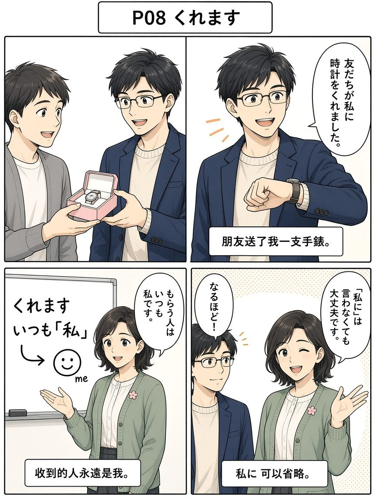
朋友送ハルト手錶。くれます的收東西的人永遠是「我」，所以「私に」可以省略。
P09 パーティーはどうでしたか
パーティーはどうでしたか
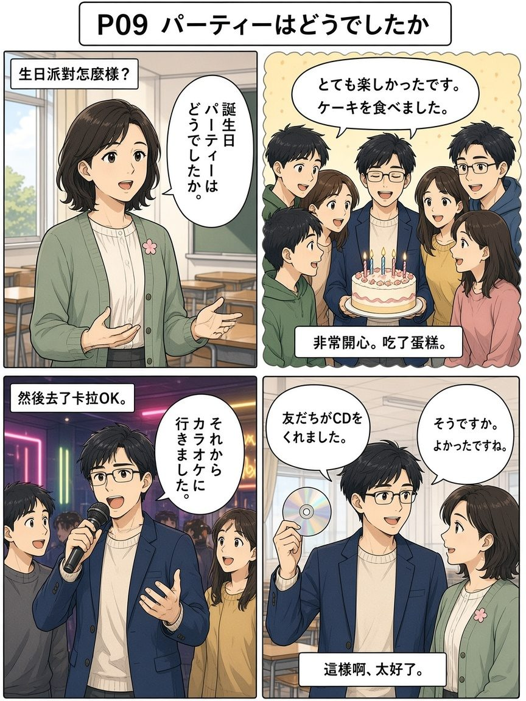
週末的生日派對：吃蛋糕、唱卡拉 OK、朋友送了 CD。聽到好消息就說「よかったですね」。
P10 送ります・借ります
送ります・借ります
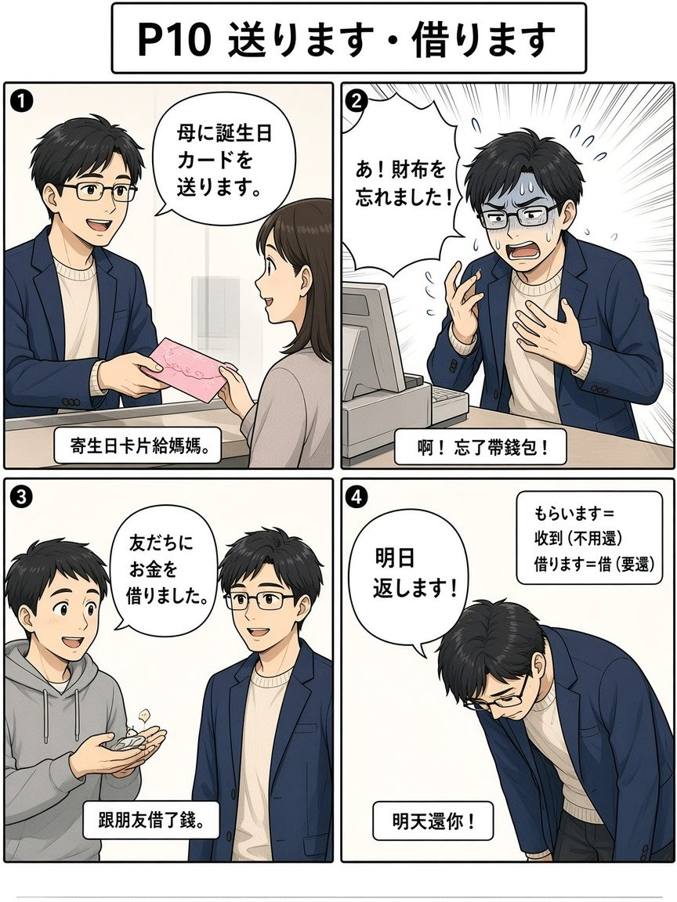
寄生日卡用 送ります；忘了帶錢包跟朋友借錢用 借ります（要還）。不要跟 もらいます 搞混。
P11 11月20日（金）検診の日
11月20日（金）検診の日
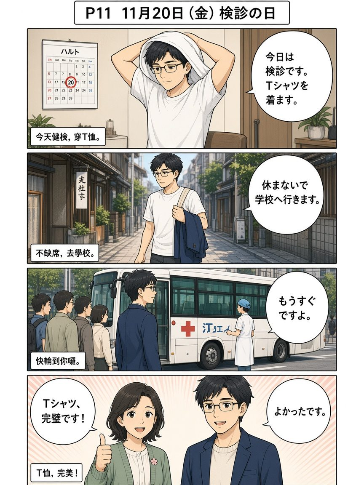
檢診當天：穿 T 恤、不請假、排隊照 X 光。もうすぐ 也能說「快輪到你了」。
P12 ミキ先生のまとめ
ミキ先生のまとめ
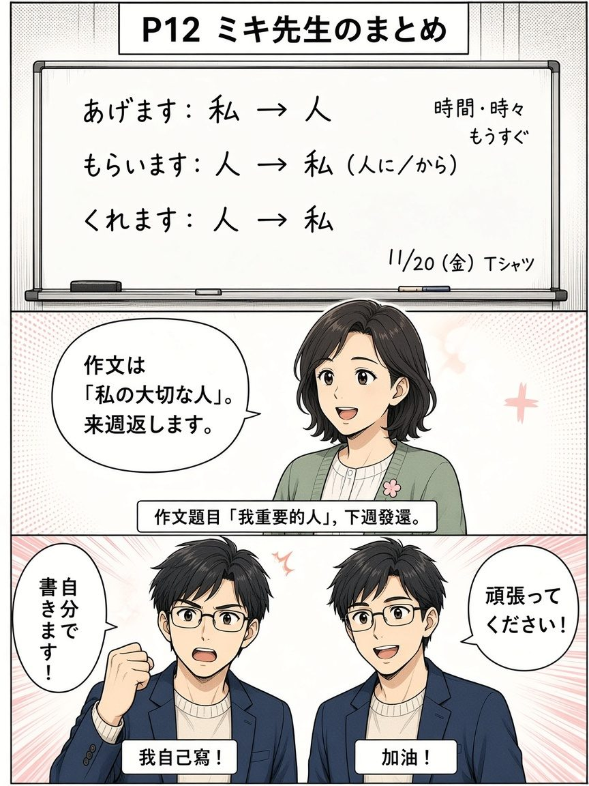
あげます：我→人；もらいます：人→我（人に／から）；くれます：人→我。作文「私の大切な人」，老師下週發還。